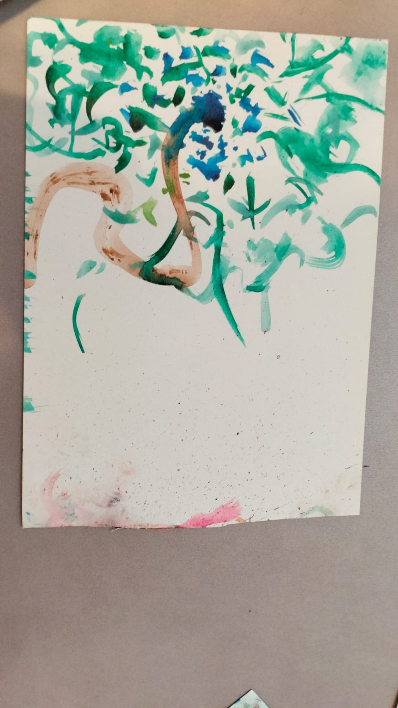
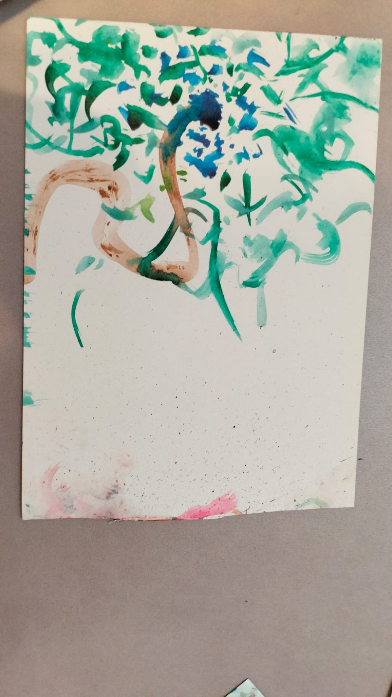

My Portfolio Gallery
[1] Zelfgemaakt bijenhotel met verschillende gatgroottes en dieptes voor verschillende inheemse metselbijen.
[2] zelfgemaakte draaischijf van een oud afgedankt hoverboard, waarmee ik verschillende potten met luchtdrogende klei heb gedraaid.
[3] In groepsverband ontworpen drone die met behulp van een ai camera en een landingssysteem met grijper afval kan detecteren,oppakken en opruimen. Gebouwd tijdens de drone challinge in de bic (brainport campus) in Eindhoven.
[4a-c] Zelfgeschreven programma in de grafische programmeertaal labview, die waardes per pixel in png en jpeg bestanden kan aanpassen, wat tot vreemde effecten leidt.
[5] robotarm die ik in groepsverband heb gemaakt. De arm werd op een autotje gemonteerd wat met behulp van sensoren een bepaald parcour moest afleggen, waarbij het objecten kon oppakken en verplaatsen.
[6] zelf ontworpen metaaldetector sensoren, die in code gekoppeld konden worden om een conveyer line te checken en lengtes en breedtes te meten van een metalen object
[7] zelfontworpen plectrum gebaseerd op de jazz3, maar dan speelbaar aan 3 kanten ,met toegevoegde grip.
[8] airplant holder speciaal gemaakt voor de ikea skadis


[9a-c] nog wat dingetjes
 

[10a-c] nog wat random dingetjes